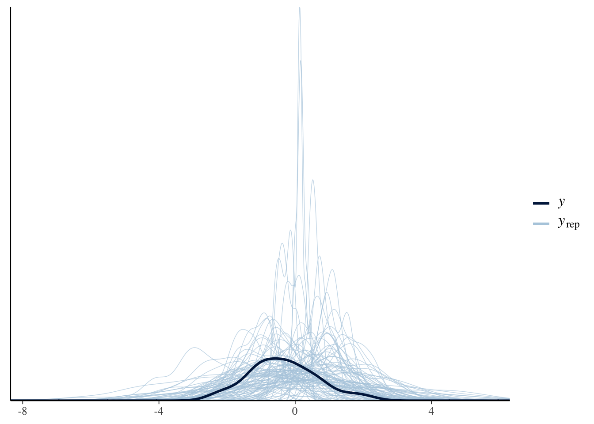
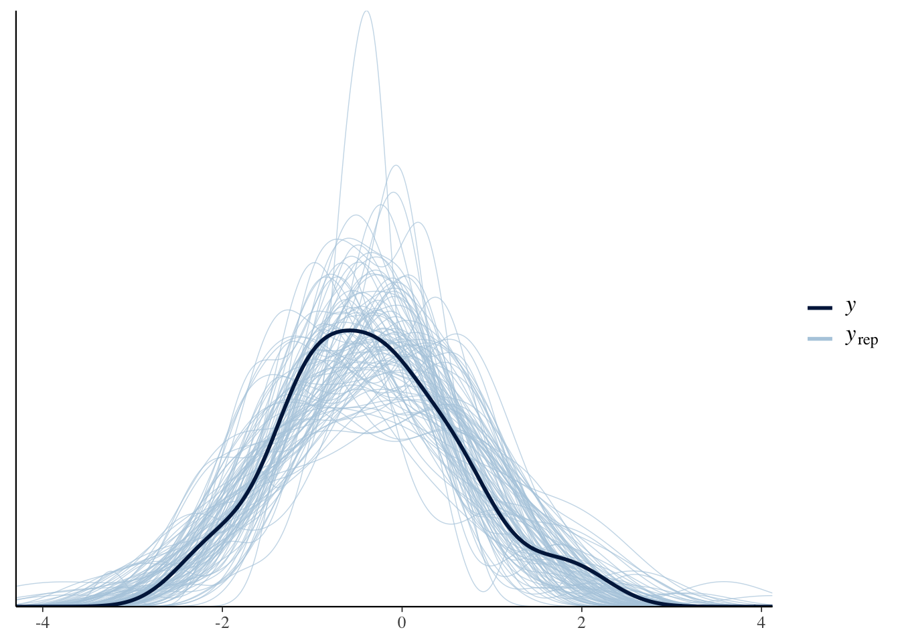
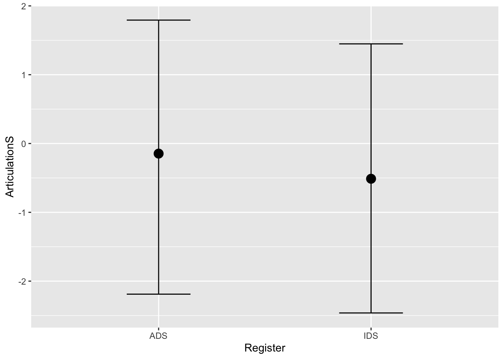
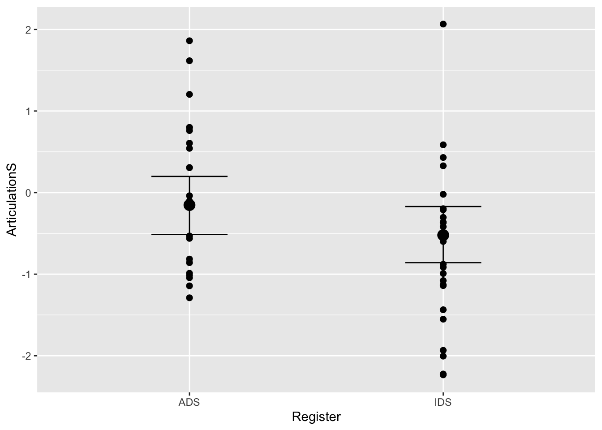
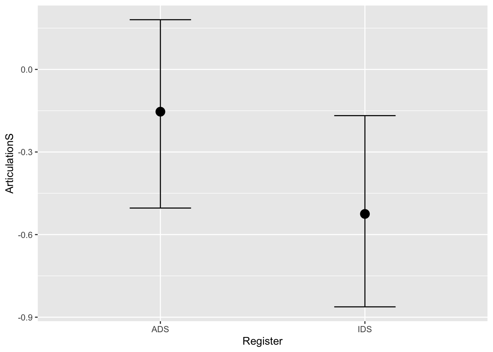
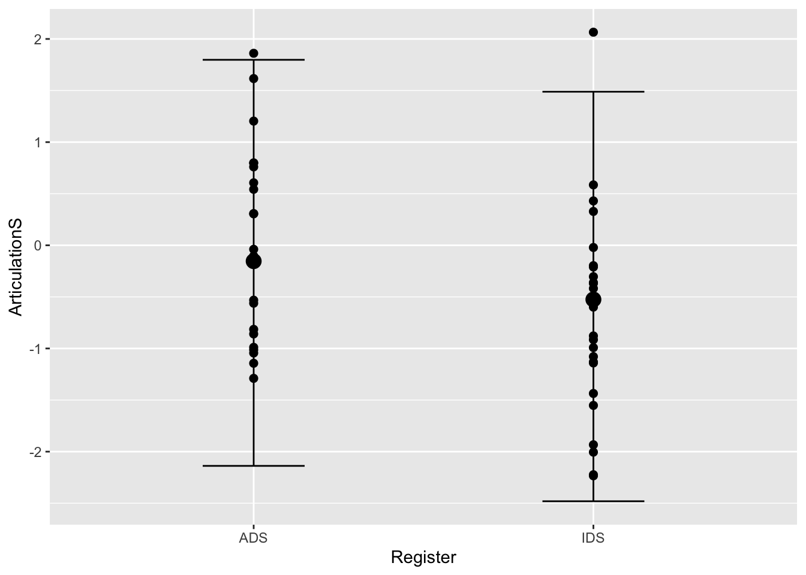
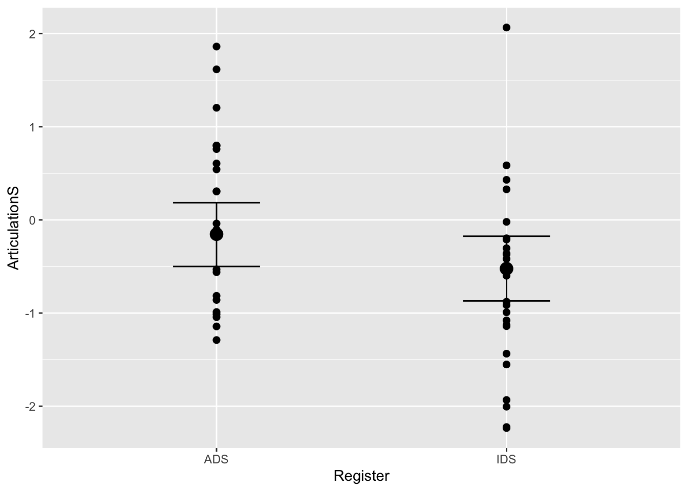

Chapter 3 Part III: Linear regression with a dichotomous predictor
Let’s start off by building a model that includes the constant effect of Register by using the bf() function:
Articulation_f2 <- bf(ArticulationS ~ 1 + Register)Let’s see which priors we need to specify for this model by using the same get_prior() function as in Part I:
get_prior(Articulation_f2,
data = d,
family = gaussian)## prior class coef group resp dpar nlpar bound
## (flat) b
## (flat) b RegisterIDS
## student_t(3, -0.4, 2.5) Intercept
## student_t(3, 0, 2.5) sigma
## source
## default
## (vectorized)
## default
## defaultThe output lets us know that we need to specify priors for the Intercept, slope (i.e. b), and residual variation (i.e. sigma). Let’s use the priors we discussed in the lecture:
Articulation_p2 <- c(
prior(normal(0, 1), class = Intercept),
prior(normal(0, 0.3), class = b),
prior(normal(1, 0.5), class = sigma))Similar to before, let’s perform a prior predictive check to make sure that our prior expectations generate relevant values:
Articulation_m2_prior <-
brm(
Articulation_f2,
data = d,
save_pars = save_pars(all = TRUE),
family = gaussian,
prior = Articulation_p2,
#file = "Articulation_m2_prior",
sample_prior = "only",
iter = 2000,
warmup = 200,
cores = 2,
chains = 2,
backend = "cmdstanr",
threads = threading(2),
control = list(
adapt_delta = 0.99,
max_treedepth = 15 ))Let’s run the pp_check() function a couple of times to check the prior predictions:
pp_check(Articulation_m2_prior, ndraws = 100)
Great! The samples from our priors appear to be within the order of magnitude that we expect. Let’s run the model with these priors on the actual data:
Articulation_m2 <-
brm(
Articulation_f2,
data = d,
save_pars = save_pars(all = TRUE),
family = gaussian,
prior = Articulation_p2,
#file = "Articulation_m2",
sample_prior = T,
iter = 5000,
warmup = 1000,
cores = 2,
chains = 2,
backend = "cmdstanr",
threads = threading(2),
control = list(
adapt_delta = 0.99,
max_treedepth = 15 ))Let’s make sure that the model has captured the data by running the pp_check() function a couple of times:
pp_check(Articulation_m2, ndraws = 100)
These plots indicate that that the posterior predictions from our model are comparable to the observed data. Perfect! Now that our model includes the constant effect of Register, we can create a plot to explore how Register changes the dependent variable (i.e. ArticulationS). We do this with the conditional_effects() function:
# Model inference (population estimate)
conditional_effects(Articulation_m2)
# Model inference (population estimate) plus actual data
plot(conditional_effects(Articulation_m2), points = T)
# Model predictions (population estimate + sigma)
conditional_effects(Articulation_m2, spaghetti=T, method="predict")
Q3.5: how do the plots using the “method=”predict"" differ from the first two?
Answer:
Let’s have a look at the prior-posterior update plots for this model:
#Sample the parameters of interest:
Posterior_m2 <- as_draws_df(Articulation_m2)
#Plot the prior-posterior update plot for the intercept:
ggplot(Posterior_m2) +
geom_density(aes(prior_Intercept), fill="steelblue", color="black",alpha=0.6) +
geom_density(aes(b_Intercept), fill="#FC4E07", color="black",alpha=0.6) +
xlab('Intercept') +
theme_classic()
#Plot the prior-posterior update plot for b:
ggplot(Posterior_m2) +
geom_density(aes(prior_b), fill="steelblue", color="black",alpha=0.6) +
geom_density(aes(b_RegisterIDS), fill="#FC4E07", color="black",alpha=0.6) +
xlab('b') +
theme_classic()
#Plot the prior-posterior update plot for sigma:
ggplot(Posterior_m2) +
geom_density(aes(prior_sigma), fill="steelblue", color="black",alpha=0.6) +
geom_density(aes(sigma), fill="#FC4E07", color="black",alpha=0.6) +
xlab('Sigma') +
theme_classic()Let’s try to read the model output and interpret the findings:
summary(Articulation_m2)## Family: gaussian
## Links: mu = identity; sigma = identity
## Formula: ArticulationS ~ 1 + Register
## Data: d (Number of observations: 48)
## Draws: 2 chains, each with iter = 4000; warmup = 0; thin = 1;
## total post-warmup draws = 8000
##
## Population-Level Effects:
## Estimate Est.Error l-95% CI u-95% CI Rhat Bulk_ESS Tail_ESS
## Intercept -0.15 0.18 -0.50 0.18 1.00 5984 4791
## RegisterIDS -0.37 0.21 -0.78 0.04 1.00 6182 4747
##
## Family Specific Parameters:
## Estimate Est.Error l-95% CI u-95% CI Rhat Bulk_ESS Tail_ESS
## sigma 0.98 0.10 0.80 1.21 1.00 5818 4892
##
## Draws were sampled using sample(hmc). For each parameter, Bulk_ESS
## and Tail_ESS are effective sample size measures, and Rhat is the potential
## scale reduction factor on split chains (at convergence, Rhat = 1).Q4: What does this model suggest about the hyperarticulation hypothesis in Danish?
Answer:
Let’s test our hypothesis that caregivers’ vowel spaces are smaller in IDS by calculating the evidence ratio, as discussed in the lecture, using the hypothesis() function:
hypothesis(Articulation_m2, "RegisterIDS < 0")## Hypothesis Tests for class b:
## Hypothesis Estimate Est.Error CI.Lower CI.Upper Evid.Ratio Post.Prob
## 1 (RegisterIDS) < 0 -0.37 0.21 -0.71 -0.03 25.14 0.96
## Star
## 1 *
## ---
## 'CI': 90%-CI for one-sided and 95%-CI for two-sided hypotheses.
## '*': For one-sided hypotheses, the posterior probability exceeds 95%;
## for two-sided hypotheses, the value tested against lies outside the 95%-CI.
## Posterior probabilities of point hypotheses assume equal prior probabilities.The evidence ratio of the above constant-effect model appears to provide quite strong evidence in favour of our hypothesis. If you’re a worrier like us, however, you’ll start to second-guess this result and think something like the following: how can we check the extent to which our specification of priors has influenced the estimates?
The answer is to conduct a prior robustness check; that is, we can loop through 15 priors with 15 different standard deviations and observe the effect it has on our posterior estimate. We’ll do this in a for loop to make it easy to see what’s going on:
# The priors for the above model, repeated here:
Articulation_p2 <- c(
prior(normal(0, 1), class = Intercept),
prior(normal(0, 0.3), class = b),
prior(normal(1, 0.5), class = sigma))
# construct a sequence of sds to loop through for the slope prior:
priSD <- seq(0.1, 1.5, length.out = 15)
priorsN <- Articulation_p2
#create empty variables to store output of the loop:
post_pred <- c()
post_pred_lci <- c()
post_pred_uci <- c()
for (i in 1:length(priSD)) {
priorsN[2,] <- set_prior(paste0("normal(0, ", priSD[i],")"), class = "b")
model_for_loop <- brm(Articulation_f2,
data = d,
family = gaussian,
prior = priorsN,
sample_prior = T,
warmup = 1000,
iter = 5000,
cores = 2,
chains = 2,
backend = "cmdstanr",
threads = threading(2),
save_pars = save_pars(all = TRUE),
control = list(adapt_delta = 0.99,
max_treedepth = 15))
post_preds <- spread_draws(model_for_loop, b_RegisterIDS)
post_pred[i] <- median(post_preds$b_RegisterIDS)
post_pred_lci[i] <- quantile(post_preds$b_RegisterIDS, prob = 0.025)
post_pred_uci[i] <- quantile(post_preds$b_RegisterIDS, prob = 0.975)
}
models_data <- tibble(priSD, post_pred, post_pred_lci, post_pred_uci)
ggplot(data=models_data, aes(x=priSD, y=post_pred)) +
geom_point(size = 3) +
geom_pointrange(ymin = post_pred_lci, ymax = post_pred_uci) +
ylim(-1.3, 0.3) +
labs(x="Standard Deviation of Slope Prior",
y="Posterior Estimate for slope",
title="Sensitivity analysis for constant-effect model") +
theme_bw() +
theme(plot.title = element_text(hjust = 0.5, size = 15),
axis.title.x = element_text(size = 13),
axis.text.y = element_text(size = 12),
axis.text.x = element_text(size = 12),
axis.title.y = element_text(size = 13))
Code to model heteroskedasticity (unequal variance):
Now that we’ve calmed our worries about the influence of our priors, we can feel slightly more confident in our results. But what if we’re also worried about the influence of heteroskedasticity (beyond how to pronounce it)? Don’t worry - we can simply model the variance in the two groups:
bonus_model <- bf(ArticulationS ~ 1 + Register, sigma ~ 1 + Register)
get_prior(bonus_model,
data = d,
family = gaussian)
bonus_priors <- c(
prior(normal(0, 1), class = Intercept),
prior(normal(0, 0.3), class = b),
prior(normal(1, 0.5), class = Intercept, dpar=sigma),
prior(normal(0, 1), class = b, dpar=sigma)
)
bonus_model_prior <-
brm(
bonus_model,
data = d,
save_pars = save_pars(all = TRUE),
family = gaussian,
prior = bonus_priors,
#file = "bonus_model_prior",
sample_prior = "only",
iter = 2000,
cores = 2,
chains = 2,
backend = "cmdstanr",
threads = threading(2),
control = list(
adapt_delta = 0.99,
max_treedepth = 15 ))
pp_check(bonus_model_prior, ndraws=50)
bonus_model_m <-
brm(
bonus_model,
data = d,
save_pars = save_pars(all = TRUE),
family = gaussian,
prior = bonus_priors,
#file = "bonus_model_m",
sample_prior = T,
iter = 2000,
cores = 2,
chains = 2,
backend = "cmdstanr",
threads = threading(2),
control = list(
adapt_delta = 0.99,
max_treedepth = 15 ))
pp_check(bonus_model_m, ndraws=50)
plot(conditional_effects(bonus_model_m), points = T)
#let's compare this to the other model:
plot(conditional_effects(Articulation_m2), points = T)
summary(bonus_model_m)## Family: gaussian
## Links: mu = identity; sigma = log
## Formula: ArticulationS ~ 1 + Register
## sigma ~ 1 + Register
## Data: d (Number of observations: 48)
## Draws: 2 chains, each with iter = 1000; warmup = 0; thin = 1;
## total post-warmup draws = 2000
##
## Population-Level Effects:
## Estimate Est.Error l-95% CI u-95% CI Rhat Bulk_ESS Tail_ESS
## Intercept -0.15 0.18 -0.51 0.19 1.00 1575 1358
## sigma_Intercept -0.03 0.16 -0.32 0.30 1.00 1403 1157
## RegisterIDS -0.35 0.21 -0.78 0.08 1.00 1563 947
## sigma_RegisterIDS 0.10 0.22 -0.33 0.53 1.00 1420 1001
##
## Draws were sampled using sample(hmc). For each parameter, Bulk_ESS
## and Tail_ESS are effective sample size measures, and Rhat is the potential
## scale reduction factor on split chains (at convergence, Rhat = 1).